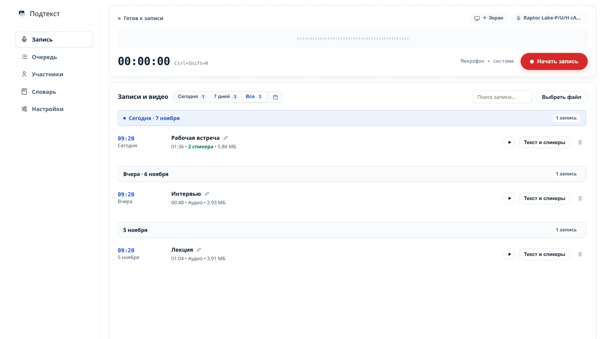
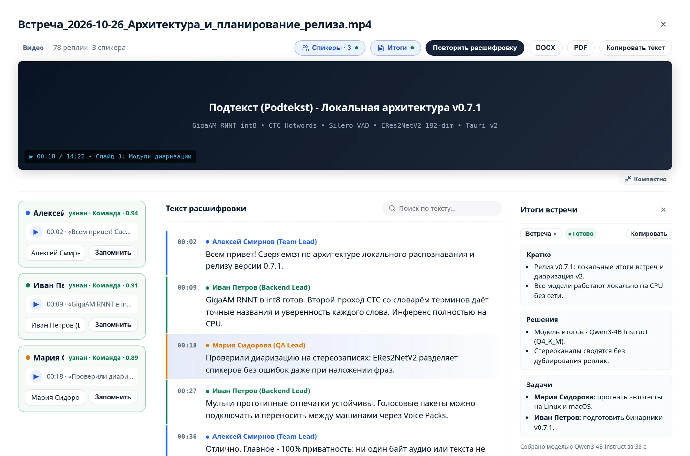

Локальная расшифровка встреч
Расшифровка аудио в текст. Без облака.
Записывайте встречи или загружайте готовые файлы. Подтекст распознаёт речь на вашем компьютере, разделяет спикеров и сохраняет протокол с таймкодами.
- Без подписки
- Без телеметрии
- Открытый код MIT
Windows 10/11 · macOS 13.4+ · Linux

Приватность по архитектуре
Записи остаются вашими
Не «надёжное облако», а отсутствие облака для записей и текста. Обработка идёт на вашем процессоре.
Политика конфиденциальностиОстаётся на устройстве
- Аудио- и видеозаписи
- Текст, таймкоды и экспорт
- Участники и голосовые отпечатки
- Статистика использования
Сеть нужна только для
- Загрузки открытых моделей по вашей команде
- Проверки новой версии на GitHub
В этих запросах нет аудио, расшифровок и идентификаторов пользователя. Обновление устанавливается только по кнопке. После загрузки моделей запись, распознавание и экспорт работают без интернета.
От звука к протоколу
Три шага - всё в одном окне
Можно записать звонок с раздельными каналами или взять готовый файл. После распознавания текст легко проверить и забрать в свою систему.
- 01
Запишите или выберите файл
Микрофон и звук звонка сохраняются раздельно. Можно перетащить готовый аудиофайл или видео.
- 02
Запустите расшифровку
GigaAM-v3 распознаёт русский язык, Whisper Turbo понимает более 30 языков. Приложение разделяет реплики по спикерам, узнаёт знакомые голоса и учитывает словарь терминов.
- 03
Проверьте и экспортируйте
Найдите фразу, прослушайте её по таймкоду, исправьте текст и уточните спикеров. Для экспорта подойдут Markdown и TXT для базы знаний, DOCX для документов и JSON для автоматизации.

Roadmap
Что дальше
Подтекст уже записывает и расшифровывает встречи локально. Дальше хотим помочь быстрее находить важное в готовом тексте. Ниже только текущие приоритеты, без обещаний дат релизов.
Полная дорожная карта-
Следующее
Актуальные компоненты
Подтекст сообщит, когда выйдет новая версия модели распознавания или ffmpeg. Так можно вовремя обновлять компоненты, не следя за каждым проектом вручную. Загрузка и установка по-прежнему будут начинаться только по вашей команде.
-
Главный задел
Итоги встречи без облака
После расшифровки можно будет получить краткий итог вместо чтения всего протокола. Локальная модель будет выбираться под объём памяти компьютера. К ней можно будет задавать вопросы о содержимом записи.
- О чём шла речь
- Какие решения приняты
- Кто и что должен сделать
- Что осталось неясным
Для разных сценариев предусмотрены стандартный шаблон и методики SPIN, STAR и SOAP. Длинные встречи будут обрабатываться по частям, чтобы итог оставался связным.
-
Параллельно
Новые способы работы с текстом
- СубтитрыГотовые файлы SRT и VTT для плееров, видеоредакторов и платформ будут создаваться из таймкодов реплик.
- ЭмоцииРядом с каждой репликой можно будет сохранить оценку эмоции в файле
.transcript.jsonдля дальнейшей обработки.
Вопросы и ответы
Перед первой записью
Коротко о стоимости, моделях и совместимости. Не нашли ответ? Задайте вопрос на GitHub.
Задать вопросПриложение действительно бесплатное?
Да. Подтекст распространяется по лицензии MIT, без подписки и ограничения минут. Добровольная поддержка автора не открывает дополнительные функции.
Нужна ли мощная видеокарта?
Нет. Модели работают на процессоре. Для GigaAM-v3 нужно от 1,5 ГБ оперативной памяти, для Whisper: от 4 ГБ свободной памяти. Базовые модели занимают около 300 МБ на диске.
Можно расшифровать готовый аудиофайл?
Да. Перетащите файл в приложение или нажмите «Выбрать файл». Поддерживаются MP3, WAV, M4A, OGG, Opus, FLAC и MP4; для MKV, WebM, MOV и AVI нужен ffmpeg.
Какие операционные системы поддерживаются?
Windows 10 и 11, Linux и macOS 13.4+ на Apple Silicon; macOS-версия на этапе тестирования. Android-версия экспериментальная: запись только с микрофона, без системного звука и видео.
Можно использовать программу для конфиденциальных разговоров?
Да, но локальная обработка не заменяет правила вашей организации и закон. Предупреждайте участников о записи, защищайте диск и соблюдайте профессиональные обязанности.
Независимая разработка
Пользуетесь - помогите проекту расти
Подтекст бесплатен для всех. Можно поддержать автора чаевыми, звездой на GitHub или отчётом об ошибке.